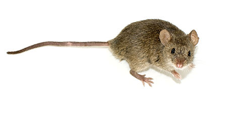

A mouse (pl.: mice) is a small rodent. Characteristically, mice are known to have a pointed snout, small rounded ears, a body-length scaly tail, and a high breeding rate. The best known mouse species is the common house mouse (Mus musculus). Mice are also popular as pets. In some places, certain kinds of field mice are locally common. They are known to invade homes for food and shelter.
